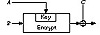

| Previous | Table of Contents | Next |
RIPE-MD was developed for the European Community’s RIPE project [1305] (see Section 25.7). The algorithm is a variation of MD4, designed to resist known cryptanalytic attacks, and produce a 128-bit hash value. The rotations and the order of the message words are modified. Additionally, two instances of the algorithm, differing only in the constants, run in parallel. After each block, the output of both instances are added to the chaining variables. This seems to make the algorithm highly resistant to cryptanalysis.
HAVAL is a variable-length one-way hash function [1646]. It is a modification of MD5. HAVAL processes messages in blocks of 1024 bits, twice those of MD5. It has eight 32-bit chaining variables, twice those of MD5. It has a variable number of rounds, from three to five (each of which has 16 steps), and it can produce a hash length of 128, 160, 192, 224, or 256 bits.
HAVAL replaces MD5’s simple nonlinear functions with highly nonlinear 7-variable functions, each of which satisfies the strict avalanche criterion. Each round uses a single function, but in every step a different permutation is applied to the inputs. It has a new message order and every step (except those in the first round) uses a different additive constant. The algorithm also has two rotations.
The core of the algorithm is
The variable number of rounds and variable-length output mean there are 15 versions of this algorithm. Den Boer’s and Bosselaers’s attack against MD5 [203] does not apply to HAVAL because of the rotation of H.
MD3 is yet another hash function designed by Ron Rivest. It had several flaws and never really made it out of the laboratory, although a description was recently published in [1335].
A group of researchers at the University of Waterloo have proposed a one-way hash function based on iterated exponentiation in GF(2593) [22]. In this scheme, a message is divided into 593-bit blocks; beginning with the first block, the blocks are successively exponentiated. Each exponent is the result of the computation with the previous block; the first exponent is given by an IV.
Ivan Damgård designed a one-way hash function based on the knapsack problem (see Section 19.2) [414]; it can be broken in about 232 operations [290, 1232, 787].
Steve Wolfram’s cellular automata [1608] have been proposed as a basis for one-way hash functions. An early implementation [414] is insecure [1052, 404]. Another one-way hash function, Cellhash [384,404], and an improved version, Subhash [384,402, 405], are based on cellular automata; both are designed for hardware. Boognish mixes the design principles of Cellhash with those of MD4 [402, 407]. StepRightUp can be implemented as a hash function as well [402].
Claus Schnorr proposed a one-way hash function based on the discrete Fourier transform, called FFT-Hash, in the summer of 1991 [1399]; it was broken a few months later by two independent groups [403, 84]. Schnorr proposed a revised version, called FFT-Hash II (the previous version was renamed FFT-Hash I) [1400], which was broken a few weeks later [1567]. Schnorr has proposed further modifications [1402, 1403] but, as it stands, the algorithm is much slower than the others in this chapter. Another hash function, called SL2 [1526], is insecure [315].
Additional theoretical work on constructing one-way hash functions from one-way functions and one-way permutations can be found in [412, 1138, 1342].
It is possible to use a symmetric block cipher algorithm as a one-way hash function. The idea is that if the block algorithm is secure, then the one-way hash function will also be secure.
The most obvious method is to encrypt the message with the algorithm in CBC or CFB mode, a fixed key, and IV; the last ciphertext block is the hash value. These methods are described in various standards using DES: both modes in [1143], CFB in [1145], CBC in [55, 56, 54]. This just isn’t good enough for one-way hash functions, although it will work for a MAC (see Section 18.14) [29].
A cleverer approach uses the message block as the key, the previous hash value as the input, and the current hash value as the output.
The actual hash functions proposed are even more complex. The block size is usually the key length, and the size of the hash value is the block size. Since most block algorithms are 64 bits, several schemes are designed around a hash that is twice the block size.
Assuming the hash function is correct, the security of the scheme is based on the security of the underlying block function. There are exceptions, though. Differential cryptanalysis is easier against block functions in hash functions than against block functions used for encryption: The key is known, so several tricks can be applied; only one right pair is needed for success; and you can generate as much chosen plaintext as you want. Some work on these lines is [1263, 858, 1313].
What follows is a summary of the various hash functions that have appeared in the literature [925, 1465, 1262]. Statements about attacks against these schemes assume that the underlying block cipher is secure; that is, the best attack against them is brute force.
One useful measure for hash functions based on block ciphers is the hash rate, or the number of n-bit messages blocks, where n is the block size of the algorithm, processed per encryption. The higher the hash rate, the faster the algorithm. (This measure was given the opposite definition in [1262], but the definition given here is more intuitive and is more widely used. This can be confusing.)
Schemes Where the Hash Length Equals the Block Size
The general scheme is as follows (see Figure 18.8):
where A, B, and C can be either Mi, H- 1, (Mi ⊕ Hi - 1), or a constant (assumed to be 0). H0 is some random initial value: IH. The message is divided up into block-size chunks, Mi, and processed individually. And there is some kind of MD-strengthening, perhaps the same padding procedure used in MD5 and SHA.

Figure 18.8 General hash function where the hash length equals the block size.
| Previous | Table of Contents | Next |
){kind=link}
){kind=link}